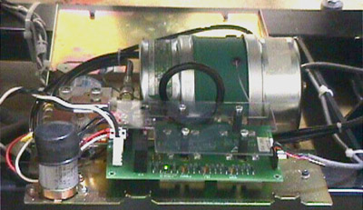

Operating Documentation
Direction 5114043-800, Rev# 9
LightSpeed 3.X Service Methods (Advanced)
Operating Documentation |
| Required Persons | Preliminary Reqs | Procedure | Finalization |
|---|---|---|---|
| 1 |
| Last Revised: | October 27, 2003 |
| Item | Qty | Effectivity | Part# | Manufacturer | |
|---|---|---|---|---|---|
| ESD wrist-band | 1 | - | - | - | |
| Phillips #2 short and flat blade screwdriver | 1 | - | - | - | |
| Item | Qty | Effectivity | Part# | Manufacturer | |
|---|---|---|---|---|---|
| Tilt Relay Board | 1 | - | - | - | |
| Wear a grounded wrist strap when you handle a circuit board. | |
Remove gantry right cover and Gantry base covers.
Turn OFF all 3 switches (Axial Drive, HVDC, 120VAC) on the STC backplane.
Tilt gantry back 20 degrees.
| Wear a grounded wrist strap when you handle a circuit board. | |
Use a short #2 phillips screwdriver to loosen the 4 screws that fasten plastic cover to the Tilt Relay Board Illustration 1.
Illustration 1: Tilt Relay Board

Remove J2 and J3 connectors.
Loosen 4 screws that secure the 4 cables to the relay board.
Loosen 8 screws to release the Tilt Relay board.
Install new Tilt Relay board and reassemble gantry.
Verify full range of tilt operation.